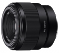

器材库 > 35mm画幅AF定焦镜头 > FE 50/1.8

详细规格
镜头类型
标准镜头
发布日期
2016-03-30
厂家推荐价格
1,999.00 （人民币）
焦距
50mm
最大光圈
f/1.8
最小光圈
f/22
视角（对角）
47°
镜头结构
6片/5组
非球面镜片
1片
光圈叶片
7片
最近对焦距离
45cm
最大放大倍率
0.14倍
滤镜口径
49mm
镜头卡口
Sony E
防抖
否
颜色
黑色
尺寸
68.6×59.5mm
重量
186g
附件
镜头遮光罩，前镜头盖，后镜头盖
匿名网友2018-04-04 13:074.58 分
操作性 4.50耐用性 4.50性价比 5.00解像力 4.50色彩还原 4.50机械结构 4.50
liuxing5hulin2017-09-24 11:474.17 分
操作性 4.00耐用性 4.00性价比 4.00解像力 4.50色彩还原 4.00机械结构 4.50
产品图 / 样片
索尼 FE 50/1.8
评测 / 相关文章
- 详细内容 （存档）
- 微单专属“小痰盂” 索尼FE 50mm F1.8评测 （存档）
- ［资讯］提升对焦速度 索尼发布FE 50/1.8固件升级 （存档）
- ［资讯］Lensrentals公布索尼FE50/1.8 MTF测试 （存档）
- ［资讯］索尼新镜头与相机开始预订 （存档）
- ［资讯］首款300mm长焦 索尼发布两款全幅FE镜头 （存档）